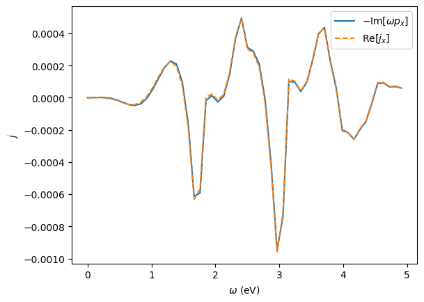

Time-Domain simulations
Observables
You can compute multiple observables in one run
from granad import MaterialCatalog, Hexagon, Pulse
flake = MaterialCatalog.get("graphene").cut_flake( Hexagon(10) )
pulse = Pulse(
amplitudes=[1e-5, 0, 0], frequency=2.3, peak=5, fwhm=2
)
operators = [flake.dipole_operator, flake.velocity_operator]
result = flake.td_run(
relaxation_rate = 1/10,
illumination = pulse,
expectation_values = operators,
end_time = 40,
)
finished timestep 0
RHS compiled
The result object stores this info. Operators are concatenated in the order you passed them in.
1
(4000, 6)
The induced dipole moment at timestep 10 is given by
[9.05330966e-13+0.j 1.58297657e-13+0.j 0.00000000e+00+0.j]
Induced current at timestep 10
[ 1.33103192e-11+6.17228924e-15j -1.09182314e-14-9.83546108e-15j
0.00000000e+00+0.00000000e+00j]
We can access the Fourier transform as
omega_min, omega_max = 0, 5
omegas, pulse_omega = result.ft_illumination( omega_min = omega_min, omega_max = omega_max )
output_omega = result.ft_output( omega_min = omega_min, omega_max = omega_max )[0]
#
# So we can quickly check the continuity equation
import matplotlib.pyplot as plt
p = -(omegas * output_omega[:,0]).imag
j = output_omega[:,3].real
plt.plot(omegas, p, label = r'$- \text{Im}[\omega p_x]$')
plt.plot(omegas, j, '--', label = r'$\text{Re}[j_x]$')
plt.legend()
plt.show()

The field is also accessible
(4000, 3)
WARNING: The following behavior might change and the density_matrix argument may be removed
Density matrices
If we want to only get density matrices, we can simply omit the observables dictionary. The result object then contains a single generic dictionary item.
result = flake.td_run(
relaxation_rate = 1/10,
illumination = pulse,
end_time = 40,
density_matrix = ["full"],
)
density_matrix = result.output[0]
print(density_matrix.shape)
finished timestep 0
RHS compiled
(4000, 87, 87)
We can convert them to energy basis
(4000, 87, 87)
Occupations
We can extract only site occupations
result = flake.td_run(
relaxation_rate = 1/10,
illumination = pulse,
density_matrix = ["occ_x"],
end_time = 40,
)
occ_x = result.output[0]
print(occ_x.shape)
finished timestep 0
RHS compiled
(4000, 87)
We can extract only energy occupations
DANGER: this introduces additional cubic complexity
flake.set_excitation( flake.homo, flake.homo + 1, 1)
flake.show_energies()
result = flake.td_run(
relaxation_rate = 1/10,
density_matrix = ["occ_e"],
end_time = 40,
)
flake.show_res(result, plot_only = [flake.homo, flake.homo+1], plot_labels = ["homo", "lumo"], show_illumination = False )

finished timestep 0
RHS compiled
Combinations
We can also extract multiple things at the same time
result = flake.td_run(
relaxation_rate = 1/10,
density_matrix = ["full", "occ_x"],
expectation_values = [flake.dipole_operator],
end_time = 40,
illumination = pulse,
)
finished timestep 0
RHS compiled
The output will now contain three arrays: induced dipole moments, site occupations and full density matrices
print(len(result.output))
print(result.output[0].shape) # by default, operators come first
print(result.output[1].shape) # we specified ["full", "occ_x"] => full density matrices
print(result.output[2].shape) # we specified ["full", "occ_x"] => site occupations
3
(4000, 3)
(4000, 87, 87)
(4000, 87)
Custom computations
TBD
Automatic Convergence Check
TBD
Parameters
TBD